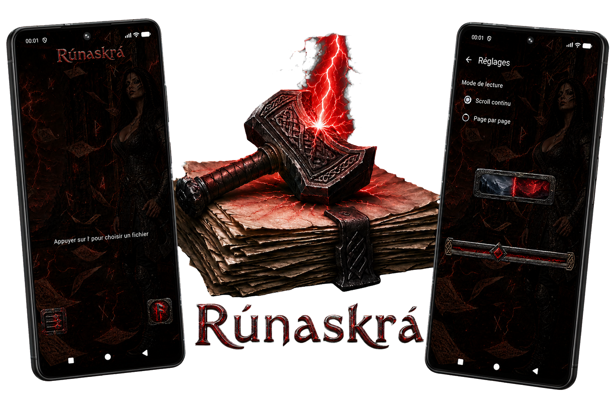

ᛟ
Lecture immédiate
Choisis un fichier PDF et commence à lire sans compte, inscription ni écran inutile.

Le savoir sous ton regard
Ouvre, lis et agrandis tes PDF. Rien d'autre ne vient troubler ta lecture.
Disponible prochainement
Une visionneuse forgée pour l'essentiel
Choisis un fichier PDF et commence à lire sans compte, inscription ni écran inutile.
Agrandis et réduis les pages simplement avec les gestes habituels de ton téléphone.
Fais défiler le document en continu ou avance proprement page par page.
Tes fichiers restent sur ton appareil. Aucun compte, aucun suivi et aucune publicité.
Runaskra se concentre sur une seule mission : afficher tes PDF proprement, rapidement et sans fonctions envahissantes.
100 % gratuite · Sans publicité